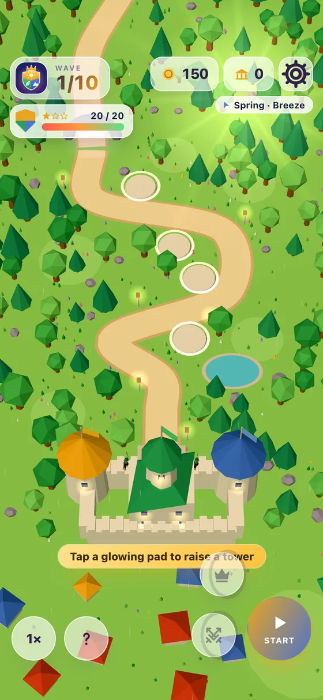
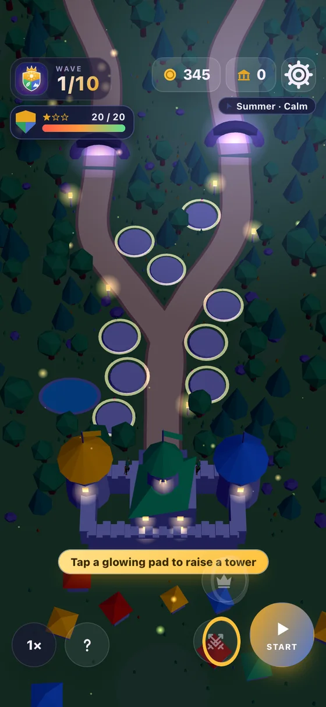
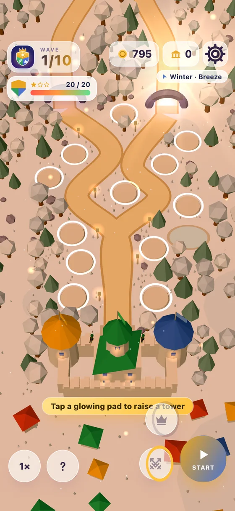
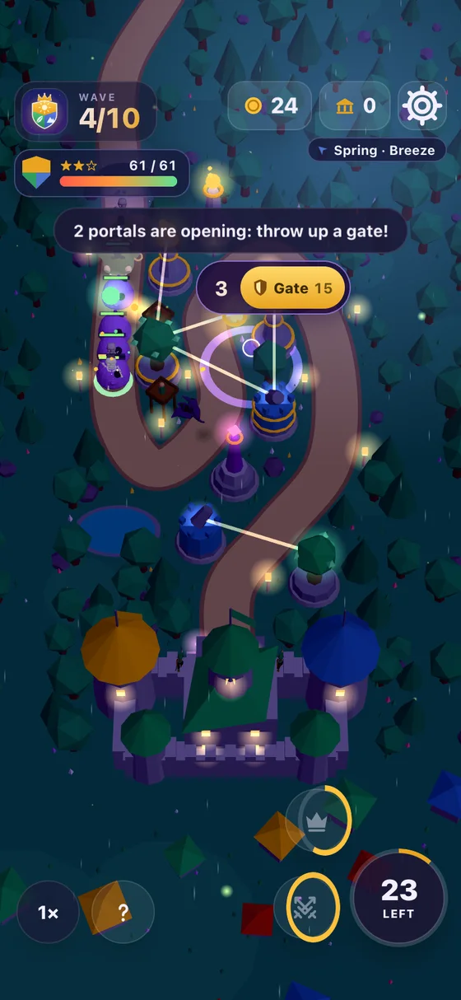
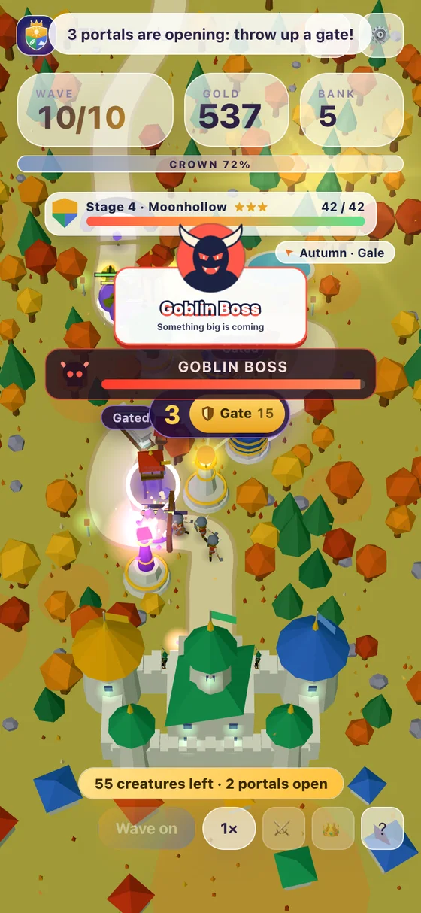

Strategy · by StateLess Squad
STM Defender
Defend the kingdom of Solva-Tino-Marko.
Fifty stages, fifty grounds
Every stage is built its own way: four pads by one long road at first, then forks, hairpins and two rifts at once, with more pads, set further from the road. Each stage brings a creature you haven't met.
- 1Stage 1: four pads
- 2Stage 14: two rifts
- 3Stage 44: twelve pads



Three founders, one Crown
Solva's bolts are quick, Tino's seeds root walkers to the spot, Marko's boulders crush a crowd. Towers of different founders side by side bond; all three in a triangle make a Crown, and the Crown Strike.

Bosses, chests and a bank
The tenth wave of every stage brings its boss. Coins, chests and bonus orbs drop on the grass: tap them up before they fade. The bank carries from stage to stage and buys gear and helpers.

What marches on STM
Hold the road
Solva
Quick bolts, tower after tower.
Tino
Seeds that root walkers to the spot.
Marko
Boulders that crush a crowd. Flyers are out of reach.
Wizard Stream
A beam that burns hotter the longer it holds one creature.
Arrow posts
Tap the grass to raise one anywhere by the road.
The Vikings
A warband marches out of the dock, mid-fight.
Free. No ads.
- No ads
- No accounts
- No tracking
- Plays offline
Questions
How do I play?
Tap a glowing pad beside the road to raise a tower, then press Start to call the wave. Creatures walk the road to the castle gate, and each one that gets there takes health from the kingdom. Hold all ten waves to clear the stage.
What do the three towers do?
Solva's bolts are quick, Tino's seeds root walkers to the spot, and Marko's boulders splash a crowd but can't reach flyers. Towers of different founders near each other bond; all three in a triangle make a Crown, which charges the Crown Strike.
How many stages are there?
Fifty, ten waves each. Stages 1 to 10 are open from the start; after that, clear a stage to open the next. Every stage has its own ground and brings a new enemy: ten creatures, then forty named kinds with a trick each, ending with the Murk King. After stage 50 the Long Night goes on for as long as you can hold.
What carries from stage to stage?
Each stage starts on a fresh board. Your bank carries: the coins and chests you tap up on the grass go into it, and it buys gear and helpers between stages.
Does it collect anything?
No. Your progress stays on your device, and nothing is sent anywhere. It plays offline.